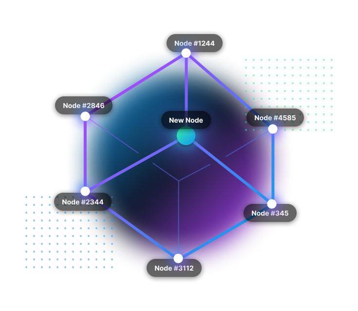

<section>
    <div class="container flex pb-12 md:pb-24 md:flex-row flex-col items-center">
      <div class="lg:w-6/12 md:w-1/2 w-5/6" data-sal="slide-right" data-sal-delay="0" data-sal-duration="500">
        
      </div>
      <div class="lg:flex-grow md:w-9/12 lg:pl-24 md:pl-16 flex flex-col md:items-start md:text-left mb-16 md:mb-0 items-center text-center text-gray-300" data-sal="slide-left" data-sal-delay="250" data-sal-duration="500">
        <h2 class="text-headline">The New World of Travel is <span class="text-gradient">Decentralized</span>.</h2>
        <p class="text-body mb-4 md:mb-8">Camino is the first realistic approach to provide blockchain technology in the travel industry.</p>
        <p class="text-body mb-4 md:mb-8">The possibilities are huge: Camino is an open-source, programmable smart contracts network for decentralized applications of all kind of travel-related products.</p>
      </div>
    </div>
  </section>